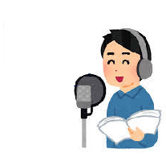
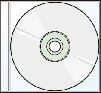

## 一緒に読書を楽しみませんか?
雑誌・新聞・ちらし・取扱説明書・学習資料何でもOK!
### 対面朗読で
さまざまな理由で読むことが難しいかた
図書館や お近くのふれあい館で
あなたの「読みたい」をお手伝いします
図書館にある本以外でもOKです
お気軽にご利用ください
### 録音図書で


取扱説明書や 興味深い本
じっくり読み返したいと思われたら

私たち「やまびこ」が
声で・合成音声でCDに録音してお届けします
テキストデータにしてUSBやメールでお届けも
手元に置いていつでも 何度でも聴けます!
## 利用してみたいけど…どうしたら…ケス？スケ
### ①まずはお近くの図書館で利用カードの登録
図書館の障害者サービス担当が登録のお手伝いをします
来館が困難な方は郵送での登録もできます
CDの再生機の貸し出し・使い方など説明致します
### ②やまびこにお電話くださいメールでもOKです
連絡いただければご希望に合わせて
資料のスキャンやテキスト化等もいたします
費用は掛かりませんお気軽にお電話ください
やまびこは「北区図書館活動区民の会」の ユニバーサル部で
手話や点字のグループと一緒に
バリアフリー映画会や朗読会なども開催しています
### 利用者さんからの声(北区桐ヶ丘在住S.Iさん)
四十路で視覚障害になって一番困ったのは読み書きでした。
やまびこを知り、今は対面音訳を月2回利用しています。
私一人を前に本を読んでもらうぜいたくなひとときですし活字だけでなく日常の 生の情報も貰える楽しい時間です。
連絡先1:北区立中央図書館03-5993-1125(代表)障害者サービス担当
連絡先2:大川薫03-3910-7331ケスメールリンクスケymbk2016ml@gmail.com
ケス以上で一緒に読書を楽しみませんか?を終わります。スケ